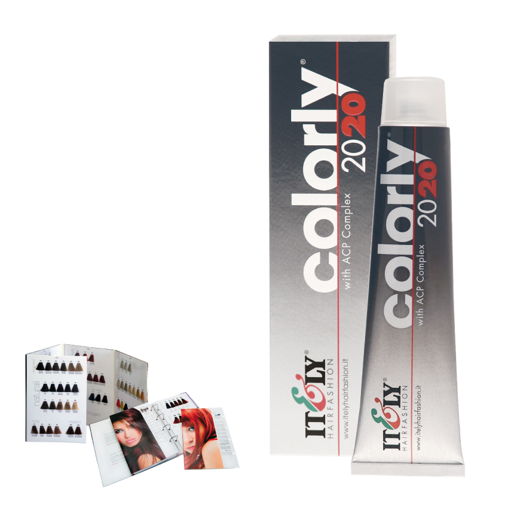

 |
Colorly 2020Colorly 2020 (92 colores) es un nuevo concepto de coloración con una fórmula todavía más eficaz y delicada para dar al cabello más protección y un color más brillante y duradero. Asegura máxima protección al cabello, larga duración del color y unos tonos moda muy brillantes. Gracias a su fórmula enriquecida con ACP Complex®, una molécula ultra protectora que garantiza permanencia y brillo al color, se obtienen resultados espectaculares sin dañar al cabello. Colorly 2020 asegura una total cobertura de canas, aclara hasta 4 tonos y se obtienen unos perfectos reflejos gracias a los aceites nutritivos de acción condicionante. La presencia de filtros UV salvaguarda el cabello durante la coloración dejando el cabello suave y brillante. Tubo de 60 ml. Mezcla: 1:1. Superaclarantes 1:1.5 |